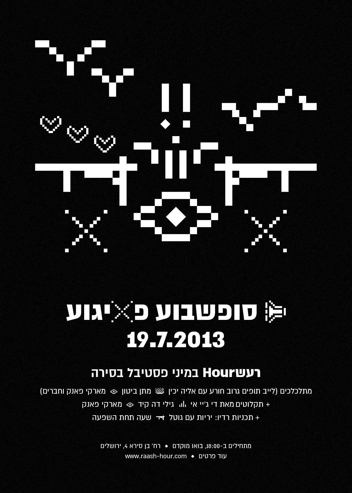

רעש Hour
אדם/קבוצה/מקום
רעש Hour היה פרוייקט של גילי לוי (גילי דה קיד), שהתחיל כרעיון שלו ושל חגי שטרנהיים (מבעלי הקסטה, התקליט והוידיאו) לבר שתפעל בו תחנת רדיו אינטרנטית. הבר נפתח ב־2012 ליד התקליט, ונבנתה תוכנית שלמה לתחנת רדיו, עם תוכניות ששודרו בלייב ואירועים והופעות במקום.
חלק מהמגישים ברדיו היו מדברים תוך כדי התוכנית על התכנים שהביאו וחלק היו רק משמיעים מוזיקה. בין השאר התארחו בתחנה ובאירועים מוזיקאים מחו"ל כגון Free the Robots, Drumetrics, Ras G, Kutmah, Luke Vibert ומהארץ כמו מארקי פאנק, צ'ארלי מגירה, ניקו טין, מקסים טורבו, 100 מטר ערכו במקום מסיבה, רוקי בי, מוריס צרפתי וברק כהן. דיג'יי E (אלי שרגורודסקי) הגיש תוכנית ובה הקלטות מימיו כסאונדמן של הפרגוד.
אנשי התחנה ארגנו את פסטיבל המוזיקה והתרבות "החזית" שהתקיים שלוש פעמים בין 2013-2015, ובו התארחו אמנים רבים מהארץ ומחו"ל, והתגלגל למה שהיום הוא פסטיבל "מקודשת". היה להם ליין מסיבות קבוע במזקקה שנקרא Headz. מעבר לכך יזמו ב־2017 לייבל שהפך למה שהיום הוא רעש רקורדס. מעבר לשידורי הרדיו היה להם אתר בו עלו כתבות על מוזיקה, בעיקר תופעות של מוזיקת שוליים, בימינו ובעבר ורבות מהן בירושלים.
תוך כמה חודשים היה קשה לגילי לתפעל את הבר עם תחנת הרדיו, בעיקר כי היה שכן שהתלונן ללא הרף על הרעש, גם כשהשמיעו מוזיקה בווליום נמוך. הוא הרגיש לא בנוח עם כך שהוא מזמין מוזיקאים לנגן ברדיו אך צריך להשמיע אותם בווליום לא מספק. הוא עזב את הבר בסוף 2013 והקולקטיב המשיך כתחנת רדיו אינטרנטית ואירועים. ב־2017 גילי התחיל לעבוד במפעל ולא היה מעוניין יותר להמשיך את הפעילות. התחנה נסגרה (התוכניות זמינות היום באתר Mixcloud) והלייבל המשיך על ידי גברי גודמן, איתי אנקר וחבריהם בתור רעש רקורדס.
תוכנית בעריכת הלהקה הינום בארכיון במיקסקלאוד
בבר הרעש האוור, 2012
פוסטר למסיבה של Headz במזקקה

פוסטר לאירוע בסירה, 2013